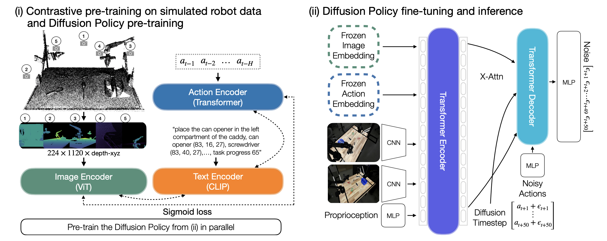
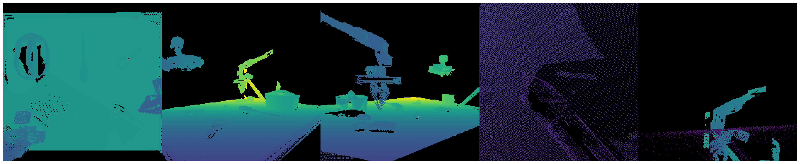
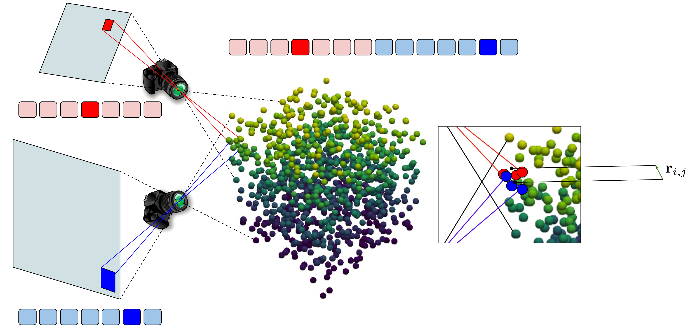
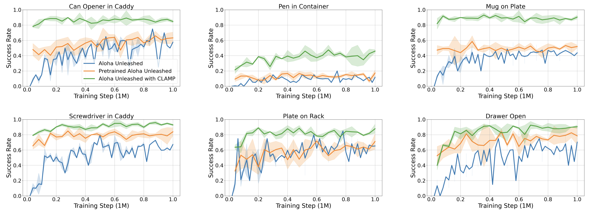

Leveraging pre-trained 2D image representations in behavior cloning policies has achieved great success and has become a standard approach for robotic manipulation. However, such representations fail to capture the 3D spatial information about objects and scenes that is essential for precise manipulation. In this work, we introduce Contrastive Learning for 3D Multi-View Action-Conditioned Robotic Manipulation Pretraining (CLAMP), a novel 3D pre-training framework that utilizes point clouds and robot actions. From the merged point cloud computed from RGB-D images and camera extrinsics, we re-render multi-view four-channel image observations with depth and 3D coordinates, including dynamic wrist views, to provide clearer views of target objects for high-precision manipulation tasks. The pre-trained encoders learn to associate the 3D geometric and positional information of objects with robot action patterns via contrastive learning on large-scale simulated robot trajectories. During encoder pre-training, we pre-train a Diffusion Policy to initialize the policy weights for fine-tuning, which is essential for improving fine-tuning sample efficiency and performance. After pre-training, we fine-tune the policy on a limited amount of task demonstrations using the learned image and action representations. We demonstrate that this pre-training and fine-tuning design substantially improves learning efficiency and policy performance on unseen tasks. Furthermore, we show that CLAMP outperforms state-of-the-art baselines across six simulated tasks and five real-world tasks.

(i): CLAMP consists of three encoders: image, action and text. The image encoder is a Vision Transformer (ViT) that takes five multi-view observations (overhead, back-right, front-left, wrist-left, and wrist-right) as input. These views are rendered from a merged point cloud and include depth and 3D coordinates. The action encoder is a Transformer encoder that takes a history of previous actions \( (a_{t−1}, \dots , a_{t−H}) \) as input. The text input includes a general task description, each object's name and normalized position in the global coordinate frame, and an integer indicating task progress, and is processed by a CLIP text encoder. The intuition is to learn image and action representations that capture correlations between action patterns and robot states as observed in images, grounded by text that describes the spatial and temporal information about the objects and task. We also pre-train a Diffusion Policy in parallel.
(ii): The Diffusion Policy is first initialized with the pre-trained weights from stage (i) and use the frozen CLAMP encoders to extract image and action embeddings. These embeddings are fed into a Transformer encoder together with RGB feature maps from ResNet-50 backbones and proprioceptive features from the robot to predict noise of shape 50×14 for the next 50 actions \( (\epsilon_{t+1} , \dots , \epsilon_{t+50} ) \).

We re-render multi-view four-channel observations from the merged point cloud that include depth and 3D coordinates, using both fixed viewpoints and dynamic wrist views, which provide clearer observations for high-precision manipulation tasks. Each virtual view has dimensions \( 224 \times 224 \times 4 \), and we tile the views horizontally to form a \( 224 \times 1120 \times 4 \) input (example shown above).

We apply STRING relative positional encoding to the image encoder, enabling tokens from different views that correspond to nearby regions in 3D space to be correlated (see the image above for an illustration). Specifically, tokens from different 2D views are concatenated, but also equipped with STRING positional encoding mechanism. Consequently, the attention score between two highlighted tokens from two different views will be modulated by a function that depends only on the vector \( \mathbf{r}_{i,j} \in \mathbb{R}^{3} \) between the centers of mass of two sub-point clouds (highlighted in red and blue correspondingly) of the visible sets of points related to those tokens.

Evaluation curves comparing our method (green) to baselines across three seeds in simulation. All methods are trained on 4500 demonstrations for 1M environment steps and evaluated for 50 trials per checkpoint every 40K steps. ALOHA Unleashed with CLAMP (green) shows strong performance at very early training stages, indicating significant gains in sample efficiency and overall performance due to pre-training.
All rollout videos are shown in real time (1x speed).
Failure cases of CLAMP across different tasks.